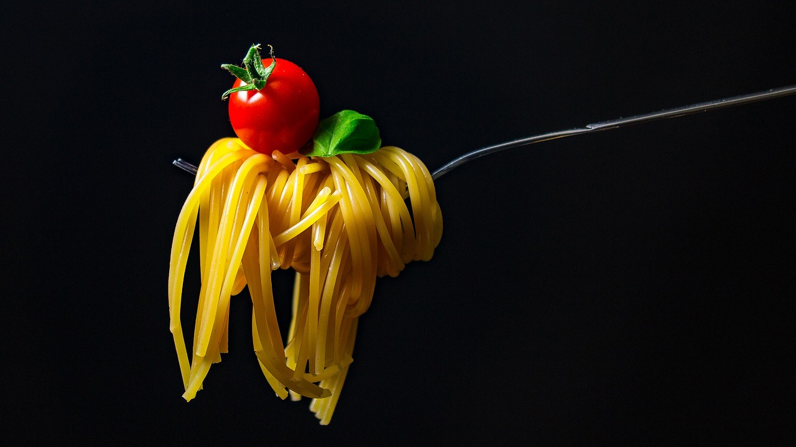

Existe na maioria das federais, custa uma fração de uma refeição comum, e muita gente nunca foi só porque ninguém explicou como entrar.

O Restaurante Universitário (RU) é o refeitório mantido pela própria universidade, que oferece refeições a preço subsidiado, ou gratuitas, como parte da assistência estudantil.
Nas universidades federais, o RU faz parte da política de assistência estudantil (o PNAES, Programa Nacional de Assistência Estudantil), pensada para que ninguém abandone o curso por falta de condições de se manter. A ideia é simples: alimentação barata e perto da sala tira um peso real do orçamento de quem estuda.
O preço que você paga não cobre o custo da refeição, a diferença é bancada pela instituição. Por isso o valor é tão baixo, e por isso existe um cadastro para definir quem paga quanto.
O funcionamento muda de campus para campus, mas o desenho costuma ser o mesmo:
Valores e critérios de gratuidade mudam de universidade para universidade e são atualizados por edital ou portaria. O caminho seguro é ir direto à fonte oficial, e não confiar em valor que alguém te passou de cabeça.
Os principais editais e oportunidades abertos para estudantes brasileiros, direto na sua caixa de entrada. Gratuito.